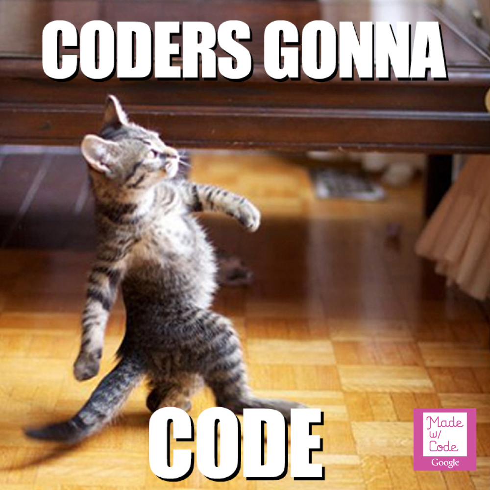
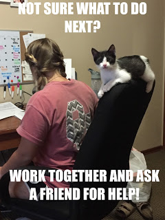

<!doctype html>
<html lang="en">

	<head>
		<meta charset="utf-8">

		<title>Intro to Programming Concepts for True Beginners</title>

		<meta name="description" content="">
		<meta name="author" content="Boulder Girl Develop It">

		<meta name="apple-mobile-web-app-capable" content="yes" />
		<meta name="apple-mobile-web-app-status-bar-style" content="black-translucent" />

		<link rel="stylesheet" href="reveal/css/reveal.css">
		<link rel="stylesheet" href="reveal/css/theme/gdilight.css" id="theme">

		<!-- For syntax highlighting -->
		<!-- light editor--><link rel="stylesheet" href="lib/css/light.css">
		<!-- dark editor<link rel="stylesheet" href="reveal/lib/css/dark.css">-->

		<!-- If use the PDF print sheet so students can print slides-->

		<link rel="stylesheet" href="reveal/css/print/pdf.css" type="text/css" media="print">
    <link rel="icon" type="image/x-icon" href="favicon.ico" />
		<!--[if lt IE 9]>
		<script src="lib/js/html5shiv.js"></script>
		<![endif]-->

		<style>
			.reveal pre {
				padding-left: 30px;
			}
		</style>
	</head>

	<body>

		<div class="reveal">

			<!-- Any section element inside of this container is displayed as a slide -->
			<div class="slides">
        	
        		<!-- Opening -->
				<section>
					
					<h3>Introduction to Programming Concepts (for True Beginners!)</h3>
				</section>
				
				<section>
					<h2>Thanks to our sponsor:</h2>
					
				</section>
				
				<section>
					<h3>Class notes</h3>
					<ul>
						<li>Class slides (streamlined): <a href="http://gdiboulder.github.io/gdi-boulder-intro-programming-concepts/">http://gdiboulder.github.io/gdi-boulder-intro-programming-concepts/</a></li>
					</ul>
				</section>

				<section>
					<h2>A few quick announcements</h2>
				</section>

				<section>
					<h3>Upcoming Events</h3>
					<p>Intro to WordPress (Part 1)</p>
					<p><strong>Tuesday Feb 23, 6pm</strong></p>
					<br />
					<p>Intro to WordPress (Part 2)</p>
					<p><strong>Thursday Feb 25, 6pm</strong></p>
					<br />
					<p>Successful Women Technologists Panel</p>
					<p><strong>Thursday Mar 31, 6pm</strong></p>
				</section>
				
				<!-- Welcome-->
				<section class="hide-pdf">
					<h3>Welcome!</h3>
					<div class = "left-align">
						<p>Girl Develop It is here to provide affordable and accessible programs to learn software through mentorship and hands-on instruction.</p>
						<p class ="green">Some "rules"</p>
						<ul>
							<li>We are here for you!</li>
							<li>Every question is important</li>
							<li>Help each other</li>
							<li>Have fun</li>
						</ul>
					</div>
				</section>

				<section class="hide-pdf">
					<h3>Your instructor</h3>
						<ul>
							<li>John Himics</li>
							<li>Twitter: <a href="http://twitter.com/johnhimics">@johnhimics</a></li>
							<li>E-mail: <a href="mailto:john@firstascentdesign.com">john@firstascentdesign.com</a></li>
						</ul>
				</section>

				<section class="hide-pdf">
					
				</section>

				<section>
					<h3>Computer Programs</h3>
					<ul>
						<li>Computer programs are everywhere.</li>
						<ul>
							<li>Run parts of your car.</li>
						    <li>Let you check your email.</li>
						    <li>Underlie that favorite app on your smartphone.</li>
						</ul>
						<li> But what are they, really?</li>
					<ul/>
				</section>

				<section>
					<h3>What is a Computer Program?</h3>
					<ul>
						<li>At its core, a computer program is a way of getting something done.</li>
					</ul>
				</section>

				<section>
					<h3>Programming Languages</h3>
					<ul>
						<li>A programming language is basically a set of strings (letters, numbers, commands) that is changed into machine code that the computer can understand.</li> 
						<li>"Hi!" = 01001000 01101001 00100001</li>
					</ul>
				</section>

				<section>
					<h3>Programming Languages</h3>
					<ul>
						<li>To develop websites, you might use HTML, JavaScript, Python, Java, PHP.</li>
						<li>To create databases and move information in and out of them, you might use MySQL, SQL, Dbase.</li>
						<li>To write applications like Microsoft Word or Adobe Acrobat, you might use C++, Java, Visual Basic</li>
					</ul>
				</section>

				<section>
					<h3>Computers are dumb</h3>
					<ul>
						<li>Computers always do what you <strong>tell</strong> them to, even if that's not what you <strong>wanted</strong> them to do.</li>
					</ul>
				</section>

				<section>
					
				</section>

				<!-- <section>
					<h3>Memory</h3>
					<ul>
						<li>A computer doesn’t have a memory like we do. Sure, a computer has “memory”-- In fact it has a couple of kinds...</li>
					</ul>
				</section> -->

				<!-- <section>
					<h3>Kinds of Memory - ROM</h3>
					<ul>
						<li><b>ROM</b> or <b>Read-only memory</b> is the more permanent kind.</li>
					</ul>
				</section> -->

				<!-- <section>
					<h3>Kinds of Memory - Storage</h3>
					<ul>
						<li>More permanent, more long term memory.</li>
					<ul>
				</section> -->

				<!-- <section>
					<h3>Kinds of Memory - RAM</h3>
					<ul>
						<li><b>RAM</b> or <b>Random-access memory</b> is less permanent.</li>
					</ul>
				</section> -->

				<section>
					<h3>Meet your playground</h3>
					<ul>
						<li>For this course, we're using <strong>Ruby</strong>.</li>
						<li>Go to <a href="http://repl.it/languages" target="_blank">repl.it,</a> which is an online terminal to practice writing code.</li>
						<li>Choose 'Ruby'.</li>
					</ul>
				</section>

				<section>
					<h3>Programming structures</h3>
					<ul>
						<li>No matter what programming language you use, the structures that are available are fairly similar.</li>
						<ul>
							<li>Variables</li>
							<li>Logical structures:</li>
							<ul>
								<li>If/Else statements</li>
								<li>Loops</li>
							</ul>
						</ul>
					</ul>
				</section>

				<section>
					<h3>Variables</h3>
					<ul>
						<li>A variable is essentially a storage container for information.</li>
						<li>Examples:</li>
							<ul>
								<li>age = 28</li>
								<li>cat = "cute"</li>
							</ul>
						<li>There are different kinds of variables based on the information that you want to store.</li>
					</ul>
				</section>

				<section>
					<h3>Integer Variables</h3>
					<ul>
						<li>Integer variables are used to store positive or negative whole numbers.</li>
						<pre><code="ruby">
							numberOfCats = 1
						</code></pre>
					</ul>
				</section>

				<section>
					<h3>String Variables</h3>
					<ul>
						<li>String variables are used to store text.</li>
						<pre><code="ruby">
							coding = "easy"
						</code></pre>
					</ul>
				</section>

				<section>
					<h3>Numbers as strings</h3>
					<ul>
						<li>You <strong>can</strong> store a number as a string variable.</li>
						<li>If you store a number as a string variable, you can’t use it in any math calculations.</li>
						<pre><code="ruby">
							number = 2
							notNumber = "2"
							number + notNumber
						</code></pre>
					</ul>
				</section>

				<section>
					<h3>Boolean Variables</h3>
					<ul>
						<li>Boolean variables are used to store the value <strong>TRUE</strong> or <strong>FALSE</strong> (yes or no).</li>
					</ul>
					<pre><code="ruby">
						youAreAwesome = true
					</code></pre>
				</section>

				<section>
					<h3>Logical structures</h3>
					<ul>
						<li>Now that you can store data, you probably want to do something with it.</li>
					</ul>
				</section>

				<section>
					<h3>Operators</h3>
					<ul>
						<li>Operators are words or symbols that let you compare, combine, or evaulate something to produce an output.</li>

						<li>A few xamples:
							<ul>
								<li>== (equal to)</li>
								<li>> (greater than)</li>
								<li>< (less than)</li>
								<li>>= (greater than or equal to)</li>
								<li>< = (less than or equal to)</li>
								<li>!= (not equal)</li>	
								<li>&& and</li>
								<li>|| or</li>						
							</ul>
						</li>
					</ul>
				</section>			

				<section>
					<h3>If/Then/Else</h3>
					<ul>
						<li>If/Then/Else statements evaluate a condition and take actions based on the result.</li>
					</ul>
				</section>

				<section>
					<h3>Let's Do Some If/Then/Else! (1/4)</h3>
					
				</section>

				<section>
					<h3>If/Then/Else Excercises (2/4)</h3>
					<ul>
						<li>Here's all the code we've run so far</li>
						<ul>
							<pre><code class="ruby">
								age = 28
								cat = "cute"
								numberOfCats = 1
								coding = "easy"
								number = 2
								notNumber = "2"
								youAreAwesome = true
							</code></pre>
						</ul>
					</ul>
				</section>

				<section>
					<h3>IF Excercise (3/4)</h3>
					<pre><code="ruby">
numberOfCats = 1

if numberOfCats < 2
    puts "That's a cool number of cats"
end

puts "I'm always going to print"
					</code></pre>
					<ul>
						<li><em>puts is short for "put string"</em></li>
						<li>Change the numbers to see what happens.</li>
						<li>Change the operators (greater than, less than, etc.)</li>
					</ul>
				</section>

				<section>
					<h3>IF/THEN/ELSE Excercise (4/4)</h3>
					<pre><code="ruby">
if numberOfCats < 2
    puts "That's a cool number of cats"
elsif numberOfCats > 5 
    puts "That's way too many cats"
end

puts "I'm always going to print"
					</code></pre>
					<ul>
						<li>Change the numbers to see what happens.</li>
						<li>Change the operators (greater than, less than, etc.)</li>
						<li>Change the string statements.</li>
					</ul>
				</section>

				<section>
					<h3>Loops</h3>
					<ul>
						<li>A loop is a list of instructions that repeats until a certain condition is reached.</li>
					</ul>
				</section>

				<section>
					<h3>Let's Do Some Loops!</h3>
				</section>

				<section>
					<h3>Loop (while) Excercise</h3>
					<pre><code="html">
papers_to_deliver = 65

while papers_to_deliver > 0
    puts papers_to_deliver
    papers_to_deliver = papers_to_deliver - 1
end
puts 'Out of papers! Go home!'
					</code></pre>
					<ul>
						<li>Change the numbers to see what happens.</li>
						<li>Change the operators (greater than, less than, etc.)</li>
						<li>Change the string statements.</li>
						<li>See the next slide that will explain what is happening in the loop (via a diagram).</li>
					</ul>
				</section>

				<section>
					
				</section>

				<section>
					<h3>Beware the Infinite Loop!</h3>
					<ul>
						<li>An infinite loop is a loop that will never meet the condition to stop. It will keep going until it's used up all your computer's (or server's) memory (RAM). This is bad!</li>
						<li>Example: In the While loop:</li>
						<ul>
							<li>If the "papers_to_deliver = papers_to_deliver - 1" line was missing, it would keep looping because 65 is always greater than 0!</li>
							<li>If "papers_to_deliver = papers_to_deliver - 1" was changed to "+ 1", it would keep adding 1 to 65 forever!</li>
						</ul>
					</ul>
				</section>

				<section>
					<h3>The gist of it all</h3>
					<p>Programming really breaks down into a few seperate tasks</p>
					<ul>
						<li>Storing and Updating Information</li>
						<li>Evaluating Information</li>
						<li>Making decisions based on the information</li>
					</ul>
					<br />
					<p><strong>Programming is easy</strong></p>
				</section>

				<section>
					<h3>You did it!</h3>
					
				</section>

				<section>
					<h3>Coding Classes Resources (most are free)</h3>
					<ul>
						<li>Learn Python The Hard Way: <a href="http://learnpythonthehardway.org/book/">http://learnpythonthehardway.org/book/</a></li>
						<li>Code year: <a href="http://www.codecademy.com/tracks/code-year" target="_blank">www.codecademy.com/tracks/code-year</a></li>
						<li>Codecademy: <a href="http://www.codecademy.com" target="_blank">www.codecademy.com</a></li>
						<li>Coursera: <a href="https://www.coursera.org" target="_blank">www.coursera.org</a></li>
						<li>Kahn Academy: <a href="https://www.khanacademy.org" target="_blank">www.khanacademy.org</a></li>
						<li>Skillcrush: <a href="http://skillcrush.com" target="_blank">www.skillcrush.com</a></li>
						<li>Udacity: <a href="https://www.udacity.com" target="_blank">www.udacity.com</a></li>
						<li>Udemy: <a href="https://www.udemy.com" target="_blank">www.udemy.com</a></li>
						<li>And of course, <a href="http://www.girldevelopit.com/chapters/wilmington" target="_blank">GDIWilmington!</a></li>
					</ul>
				</section>

				<section>
					
					

					<h3>Keep on coding!</h3>
					<p>Intro to WordPress (Part 1) 
					<strong>Tuesday Feb 23, 6pm</strong></p>
					<p>Intro to WordPress (Part 2) 
					<strong>Thursday Feb 25, 6pm</strong></p>
					<p>Successful Women Technologists Panel 
					<strong>Thursday Mar 31, 6pm</strong></p>
				</section>
			</div>


  		<footer>
        <div class="copyright">
          Introduction to Programming Concepts (for True Beginners!) &hearts; Girl Develop It Boulder
          <a rel="license" href="http://creativecommons.org/licenses/by-nc/3.0/deed.en_US"></a>
        </div>
      </footer>
		</div>


		<script src="reveal/lib/js/head.min.js"></script>
		<script src="reveal/js/reveal.min.js"></script>

		<script>

			// Full list of configuration options available here:
			// https://github.com/hakimel/reveal.js#configuration
			Reveal.initialize({
				controls: true,
				progress: true,
				history: true,

				theme: Reveal.getQueryHash().theme, // available themes are in /css/theme
				transition: Reveal.getQueryHash().transition || 'default', // default/cube/page/concave/zoom/linear/none

				// Optional libraries used to extend on reveal.js
				dependencies: [
					{ src: 'reveal/lib/js/classList.js', condition: function() { return !document.body.classList; } },
					{ src: 'reveal/plugin/markdown/showdown.js', condition: function() { return !!document.querySelector( '[data-markdown]' ); } },
					{ src: 'reveal/plugin/markdown/markdown.js', condition: function() { return !!document.querySelector( '[data-markdown]' ); } },
					{ src: 'reveal/plugin/highlight/highlight.js', async: true, callback: function() { hljs.initHighlightingOnLoad(); } },
					{ src: 'reveal/plugin/zoom-js/zoom.js', async: true, condition: function() { return !!document.body.classList; } },
					{ src: 'reveal/plugin/notes/notes.js', async: true, condition: function() { return !!document.body.classList; } }
				]
			});

		</script>

	</body>
</html>
